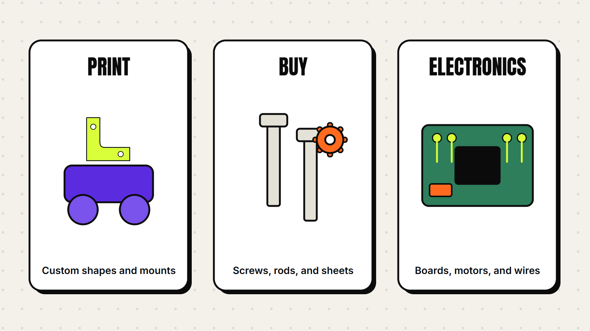
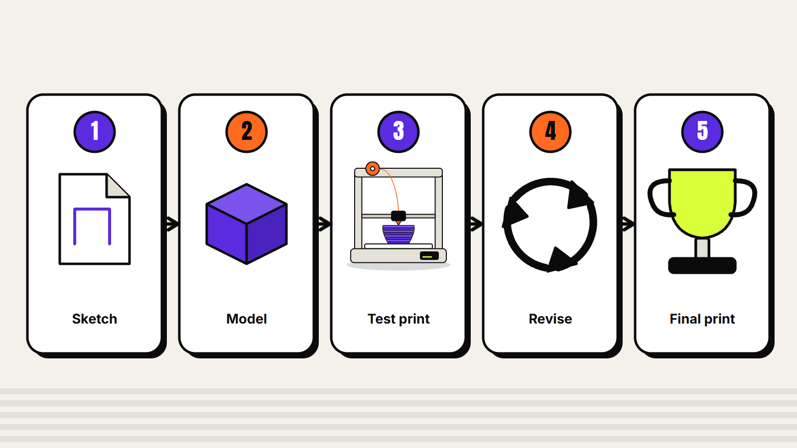

A printed part can turn a student project from a drawing into something a teacher can hold. Robot chassis, architectural models, science demonstrators, and enclosures all benefit. The trick is planning early, because printing takes time and first versions rarely fit perfectly. This guide helps students plan a project that finishes on time.
Not every part should be printed. Rods, screws, boards, and sheets are often cheaper and stronger from a shop. Print the parts that are custom: mounts, holders, gears for light loads, casings, and shapes you cannot buy.


| Project | Printed parts | Watch out for |
|---|---|---|
| Robotics | Chassis, motor mounts, wheels | Screw positions and weight |
| Electronics | Enclosures and button caps | Heat, ventilation, port openings |
| Architecture | Scale buildings and landscape | Thin walls at small scale |
| Science | Demonstration models and holders | Accuracy and chemical resistance |
| Product design | Prototypes | Time for revisions |
Measure the board with components fitted. Leave space for wires and plugs, add vent slots, and use screw posts or snap fits so you can open it. Printed plastic is not certified insulation, so mains-powered projects need a proper certified enclosure and supervision from a qualified adult.
Start with beginner design software, then read designing for print and preparing files.
Check your institution's rules on outside help. Using a printing service to make your design is usually different from having someone design it for you, but say what you did yourself. Credit any model you adapt and follow its licence.
Send a clean file, quantity, material, colour, and your deadline. Say it is a student project and which dimensions are critical. Ask early: queues grow near exam and submission seasons.
Tip: Plan for the final print to arrive a week before you need it. That week is your safety net.
If a part does not fit, do not force it. Measure the difference, change the model, and reprint only that piece. Keep the old versions; showing your iterations often earns credit, because it demonstrates engineering thinking.
Take a photo of each version and note what changed and why. Record measurements, material, and any failures. When the report is due, the story of the project is already written: the first idea, the part that did not fit, the correction, and the final result. Assessors often value that reasoning as much as the finished object. A simple table of version, problem, and fix is enough, and it helps a team member continue your work if you are away.
Teams should agree one shared folder and clear file names, so nobody prints an old version by mistake.
Finally, practise your demonstration with the printed parts a few days early. Handle them the way you will in front of others, and carry a spare of the piece most likely to break.
Good enough for light demonstrations when designed with suitable tooth size and clearance. Small or heavily loaded gears wear quickly, so buy those if reliability matters.
It helps. Shared formats such as STEP allow exchange between programs, but one tool and one folder avoid most version mix-ups.
Print only the parts that cannot be bought, make them small, use one colour, and combine orders with teammates. Ask for a quote early so the design can be adjusted.
Yes, with a compatible primer and paint. Leave time for drying, and keep paint off surfaces that must slide or fit.
Spare screws, a small repair adhesive, a spare of any fragile part, and photos of earlier versions in case someone asks how the design developed.
A print service can point out printability problems. It does not replace your own engineering checks or your supervisor's safety approval.
Be ready to say why each part was printed instead of bought, why you chose the material, and what you changed after testing. Clear reasons show understanding even when the final build is imperfect. A failed early part on the table, with a short note about what it taught you, is often a strong talking point.
Upload your file on the quote page, or describe your idea to our design service.